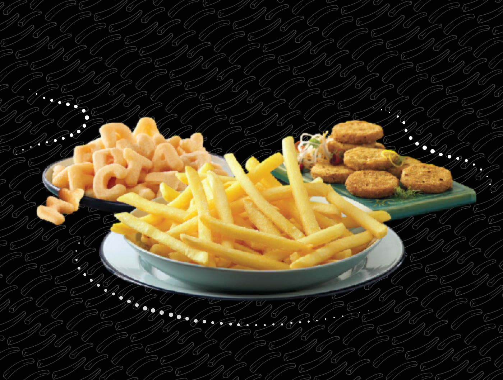
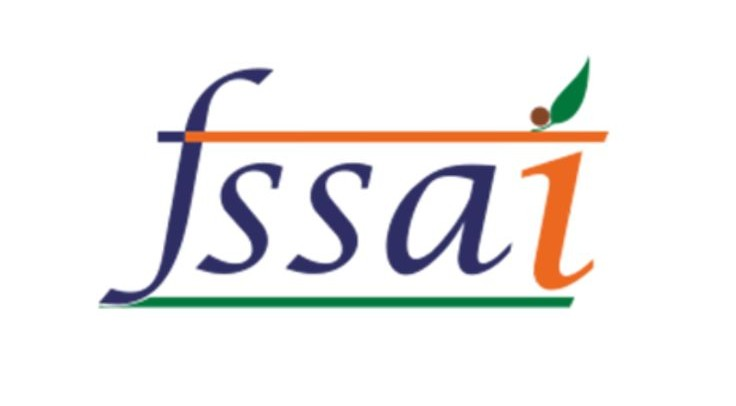
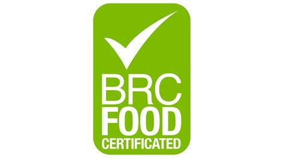

Heating up the fryer…
We manage everything in-house — seeds, farming, storage, processing and delivery.
Premium European-American tubers sourced from leading tissue-culture labs across the globe, multiplied through three generations of seed potatoes.
Farms in North Gujarat’s Banaskantha — India’s top potato belt — plus Punjab and Himachal Pradesh keep supply smooth and consistent.
International agro experts teach good harvesting practices, seed selection and safe, correct crop-protection use.
Our agro team runs trials on corporate farms to find better potato varieties and smarter cultivation methods.
Our in-house sub-zero storage holds up to 1.5 lakh tons with dehumidification and climate control — so we’re stocked all year.
Potatoes move straight from storage to our plant in Mehsana for washing, cutting, par-frying and freezing.
Every batch is checked against FSSAI, BRC, Sedex and Kosher standards before it leaves the line.
Frozen pack to frozen truck to your freezer — the cold chain is never broken.

With contracts across 7,500+ farmers, we guarantee a dependable supply of produce — and, in return, assured earnings for the people who grow it.

